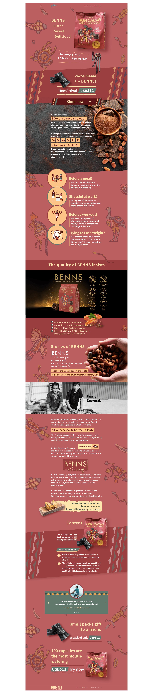

Website Design

A one-page website was designed and developed for BENNS Chocolate.
As a UIUX designer for 2 years, almost every case must be created out of nothing. At first, there were only three product photos of BENNS, so I used some stock images and drew decorative graphics myself to produce this entire one-page web design. Made in Adobe Experience Design.